Spotted: Making it easy for students to discover and explore new places around campus.
Product Design • Prototyping • Mobile
TIMELINE
Spring 2021
12 weeks
ROLE
Product Designer
User Researcher
TEAM
Jealous Jaguar
Raging Rabbit
Proud Panda

Context
Spotted is a project I completed as a part of the cohort program
for Brown RISD Innovation Community. Spotted was an app that our project lead had previously
created in one of her classes, and the app's purpose was to help users find spots to explore
near them by interest, activity, distance, and more. We set out to rework the app's mission and
redesign the experience from scratch.
Research
ORIGINAL PROBLEM STATEMENT
To narrow down a target audience, we decided to redesign the product to appeal to
college students. At the beginning of this study, our hypothesis was:
College students want to find places to create meaningful experiences with friends and others,
but they can't because they don't know where to go.
USER SURVEYS
Through surveys, we asked a random pool of 100+ college age students to answer questions about how well they know their city,
what they rely on to find new places to explore, and their experiences with using those methods.
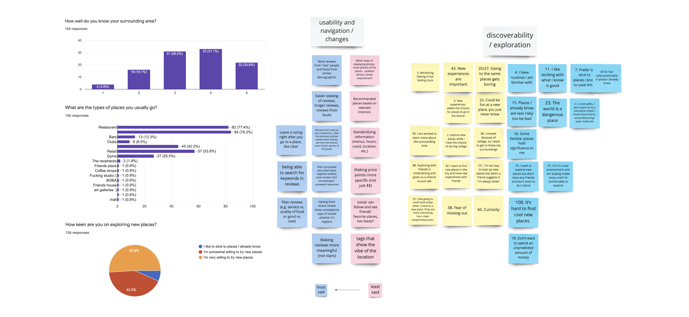
SURVEY INSIGHTS
After analyzing our survey results, we discovered two key insights.
👁️ Many users felt seeing visuals online increased their chances of exploring
that place.
🤝 Reviews on rating apps are insignificant and less trustworthy for college
students. People would prefer reviews from personal friends and people of the same age demographic.
REWORKED PROBLEM STATEMENT
Using this new information, we reworked our problem statement to more accurately reflect
our user research and refine the focus of our product.
College students find exploring their college cities to be important because
it is designated time in their life to explore new places. In addition, many students like to explore
new places with friends to give them an incentive to spend more time together and socially engage with
one another.
Furthermore, people want to find new places to explore, but it's difficult because they heavily rely on
recommendations by people they know rather than strangers online.
Ideation
FEATURE BRAINSTORMING
Next, our group did Crazy Eights to brainstorm possible solutions and then voted on and
mapped out our favorite features on an impact-feasibility matrix to determine which ones we would
focus on implementing into the product.
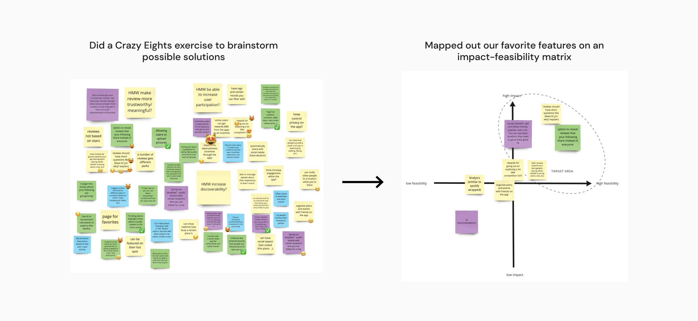
POTENTIAL OPPORTUNITIES
From our matrix, we crafted
three "How might we" statements to reframe our insights into actionable opportunity areas.
Personalization: How might we be able to show reviews that are relevant to the user's demographics and interests?
Qualitative Reviews: How might we create a review system where users are able to learn more than a star rating?
Visual Engagement: How might we create a visually-engaging platform that entices people to explore new spots?
COMPETITIVE ANALYSIS
We also did some research on existing apps that address different features that we wanted to incorporate into our product.
We looked at Airbnb and Yelp for inspiration for our review format, Google Maps for our map and
search function, and Pinterest for its visual emphasis and use of boards.
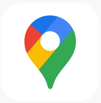
Google Maps
Map + Search Function
Pinterest
Visuals + Use of Boards
Sketching & Wireframing
SKETCHING
We then began to start drafting some low fidelity wireframes. Each one of our team members
focused on a separate feature to wireframe. I was tasked to wireframe some of the profile page
user flows.
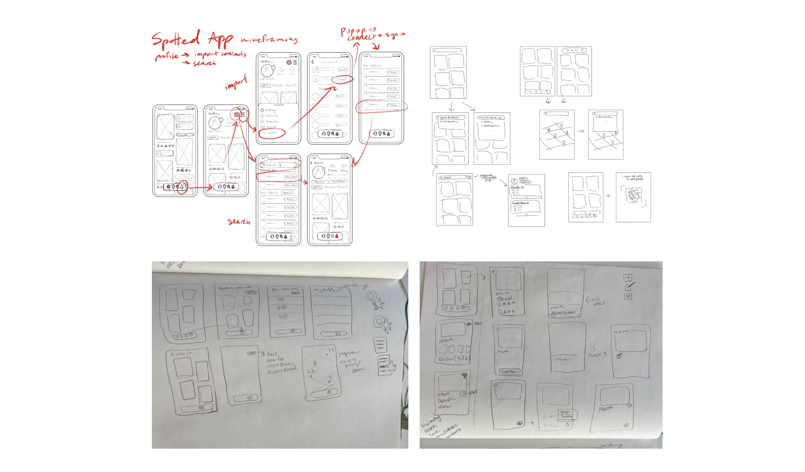
COMBINING IDEAS INTO WIREFRAME
After sketching, we regrouped and discussed whether our sketches
were effective at solving the problem.
We then combined our ideas into a single wireframe that we created in Figma.
Some of the user experiences we explored were redesigns of the homepage, navigation bar, search function, and review system.
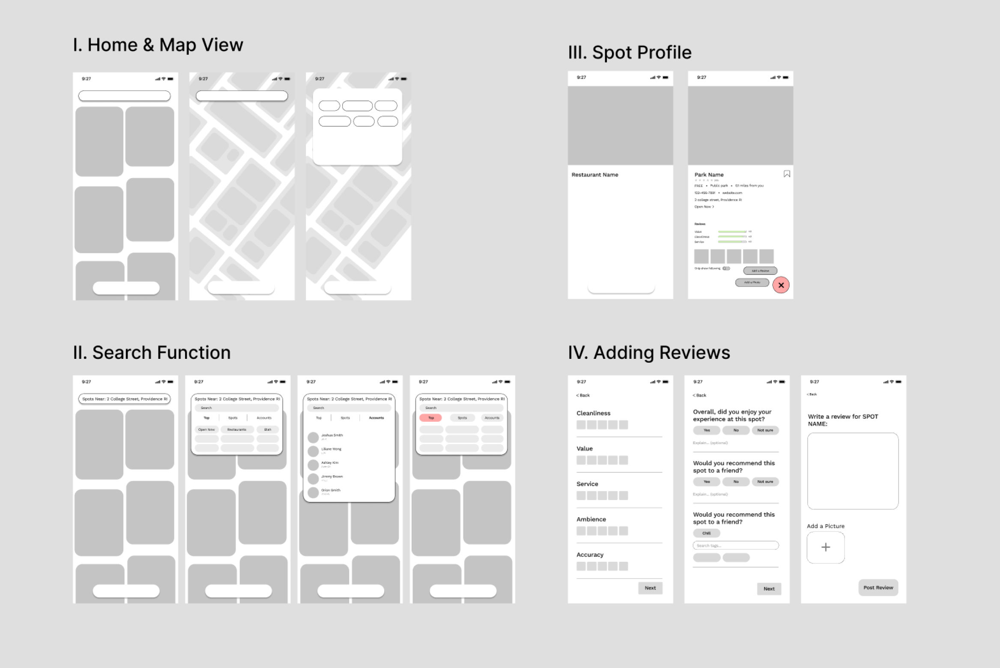
VISUAL DESIGN STYLE GUIDE
We also created a visual design style guide that documents the main colors and typography to keep our designs
consistent and establish a visual identity as we moved on to the high-fidelity wireframes. We decided to go for a
clean, minimalist look with just one accent color since the app is very image-heavy.
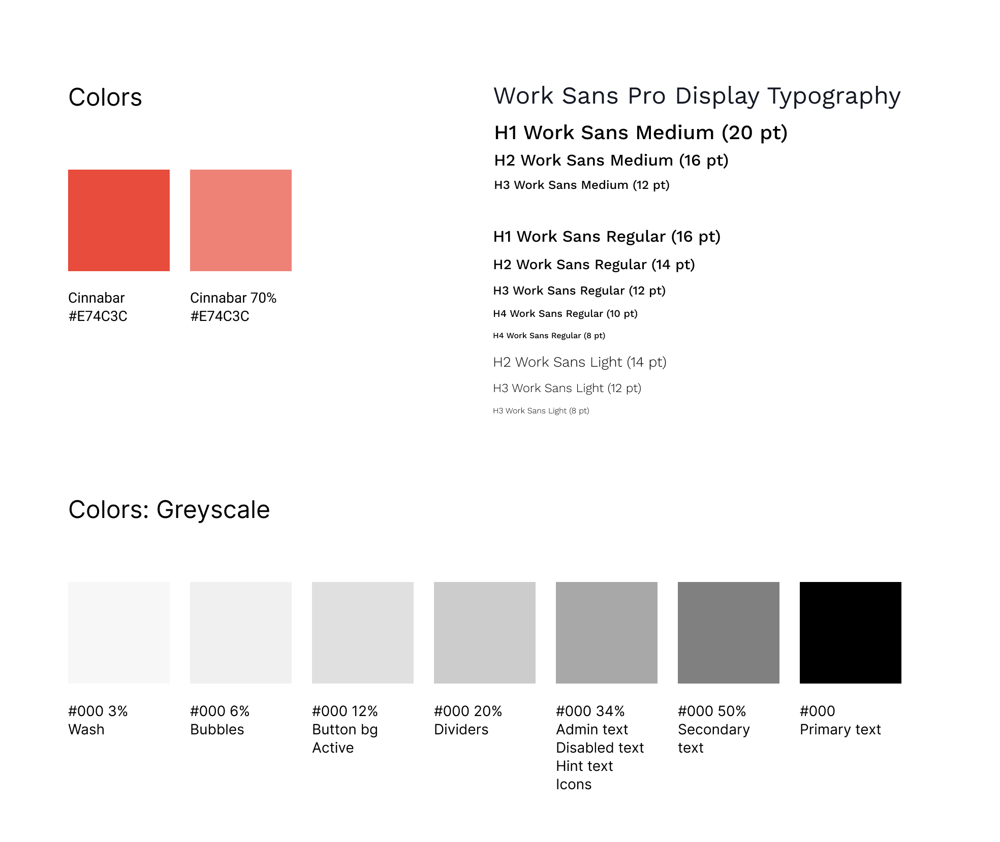
Design Decisions
There were a few key design decisions that we made in this process.
REDESIGNING HOME
Although we focused our project on creating a personalized review system, we wanted to clean up the
user experience from the home page.
One significant change we decided on was removing the search button from the navigation bar. We thought this
was redundant and unnecessary because there was already a permanent search bar at the top of the screen. Also,
we added the distance under each spot, which improves efficiency because the user doesn't have
to tap each spot to see how far they are. We also darkened the text at the top so it is more accessible for visually-impaired
users.
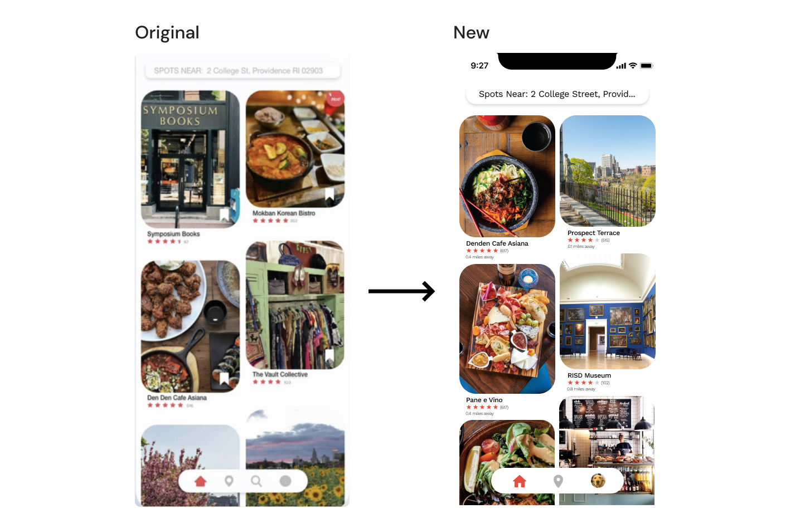
UPLOADING CONTENT
Due to the nature of Spotted being a photo-heavy app, we wanted to give users the ability to upload photos without having to leave a review.
We decided to go with a toggle button instead of sticky button because it reflected the need of being easy and quick to access.
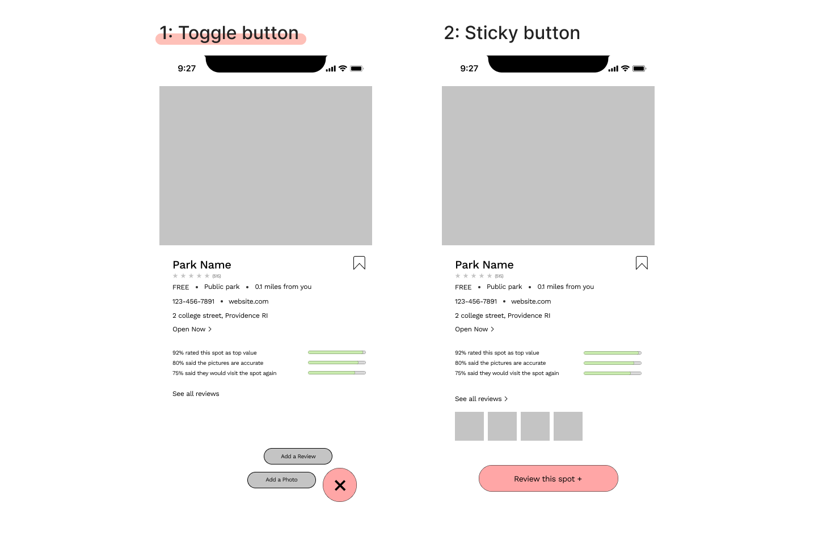
QUALITY REVIEWS
We also spent a lot of time trying to create a review system that was user-friendly but also informative. We chose Option 1
because it was less cluttered and more inline with the app’s overall design aesthetics. Furthermore, Option 2 had redundant
information, and had disorganized information hierarchy from the first page to the third.
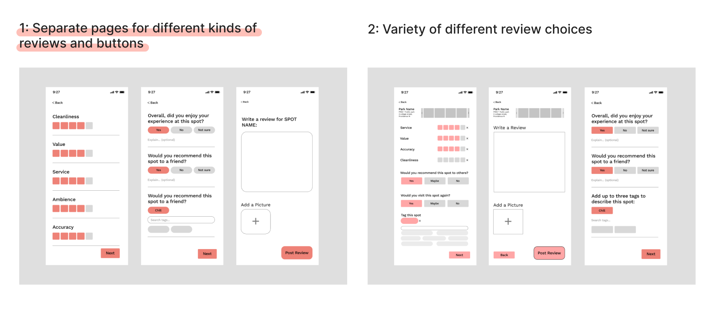
SEARCH
Because our research showed us that users rely heavily on recommendations from peers, we wanted to make Spotted a social platform.
So with this in mind, we created a new way to search different categories, which include: top or popular spots and accounts, spots,
and accounts. The user has the power to filter their search suggestions. This decision is reflected in Option 2.
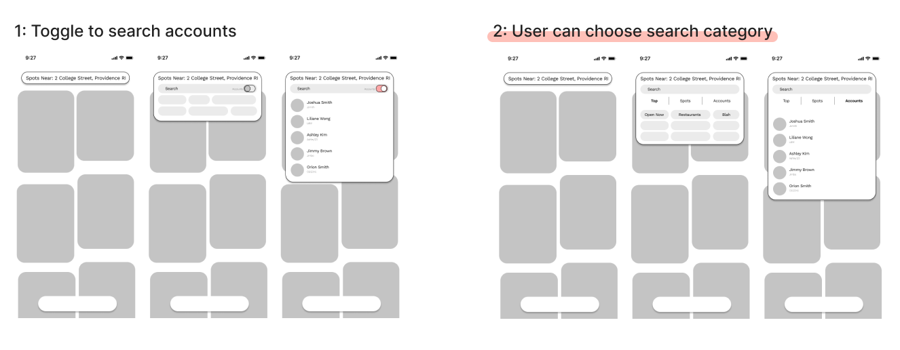
Final Designs
Finally, we translated our low-fidelity wireframes into high-fidelity prototypes in Figma using the colors,
typography, and components from our style guide. Here are the main highlights of the final design:
HOME: USER-INTUITIVE NAVIGATION
On the home page, users can view spots that are closest to them and they can search for both accounts and
different types of places using the search bar, from the home page.
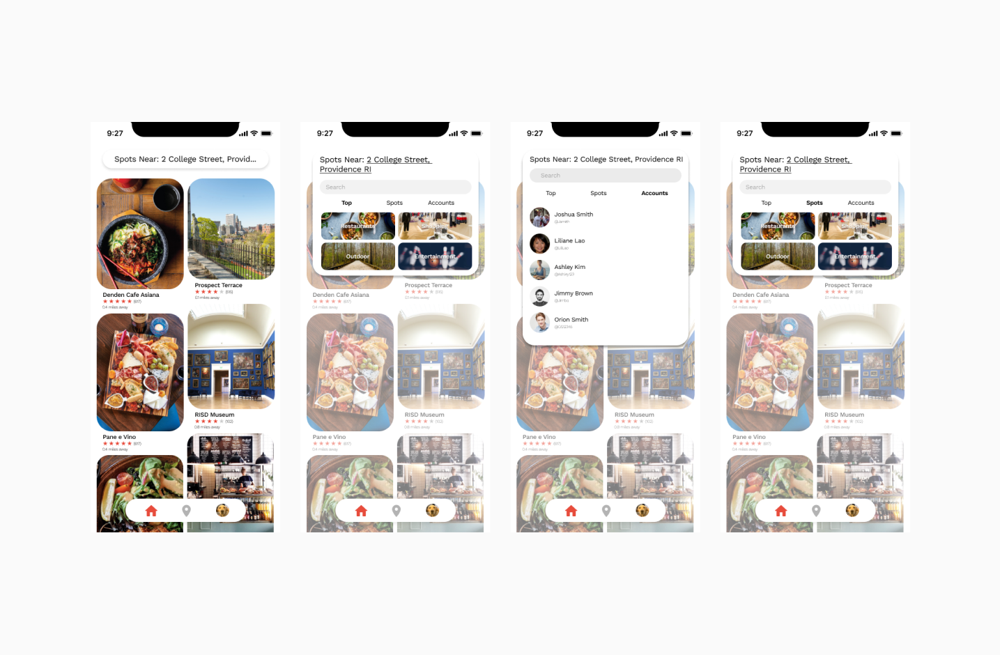
SEARCH + MAP
Users can also use the top search bar to find spots and filter them by availability, distance, and more.
The map function of the app (found in the bottom navigation) allows users to be able to visually see what
spots are around them and how far or close they are to each spot.
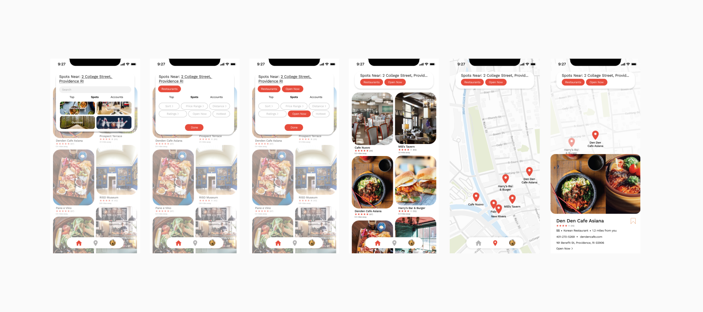
PERSONALIZED REVIEWS
Users can also filter reviews so that they only see reviews from people they are following. Assuming that
users will follow their friends and maybe influencers, by being able to filter reviews, they can get reviews
from people they trust and find the hottest spots that their friends are raving about. Users can also see the
value, service, and taste very quickly through a bar visual and images taken by other users.
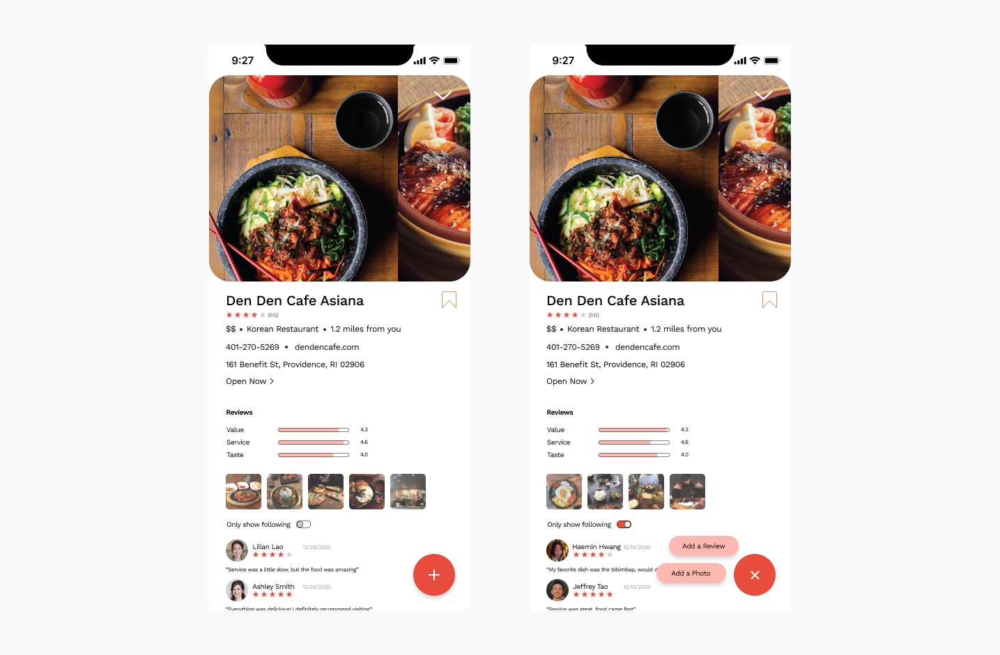
REVIEW SYSTEM
our review system was something that we focused a lot on. Through our design, users can quickly and easily
provide quantitative metrics through star ratings and yes/no questions and add qualitative reviews through
tags and writing. This allows for a more holistic, trustworthy, and transparent review system.
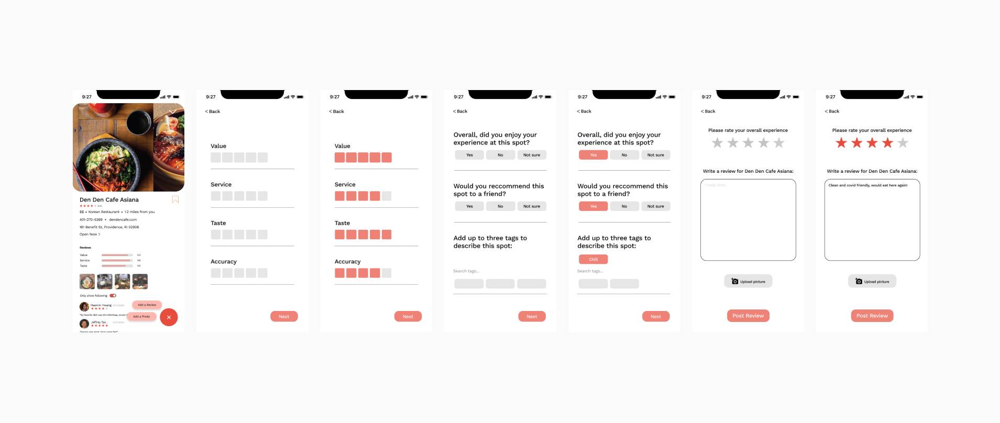
PROFILE
We also gave users the ability to save spots and create boards, which essentially group spots into little folders.
We thought this would be helpful to help plan dates or trips with friends or just keep track of favorite spots.
Also, reviews that users have posted are displayed on their profile, so their followers can see where they’ve
been and how they enjoyed those spots.
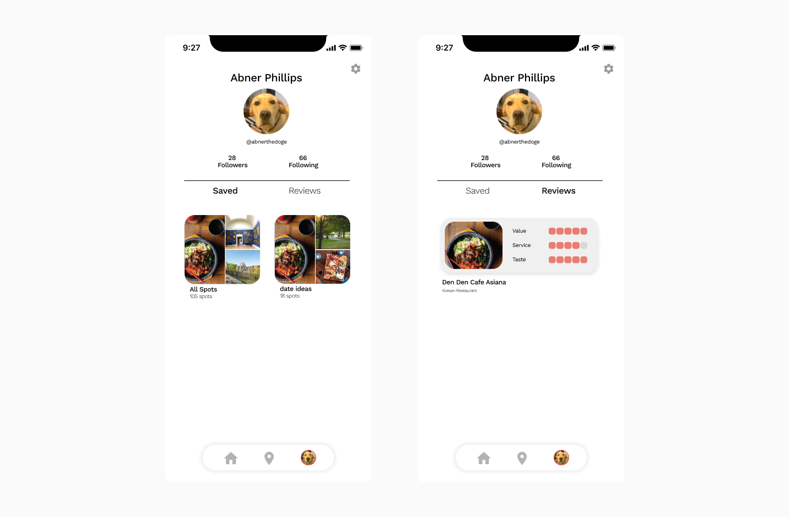
Conclusion & Learnings
This was the first time I was involved in designing an app idea. I learned a lot about the UI/UX design process and how to work collaboratively
with other designers, and I gained experience working with design tools like Figma. If I had more time,
I would conduct more research and usability testing throughout the design process and on final designs. I'd also like to
explore and enhance the social capability of the app by finding ways to incentivize posting reviews and pictures of spots.
I also think the app leans toward being too restaurant-heavy, such that it’s sort of too much like Yelp.
In the future, I’d like to think of ways to redefine the app’s features and mission to focus on exploring
new places with friends.